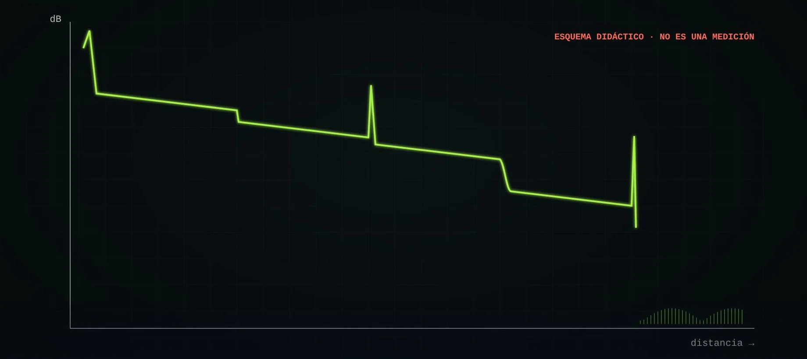
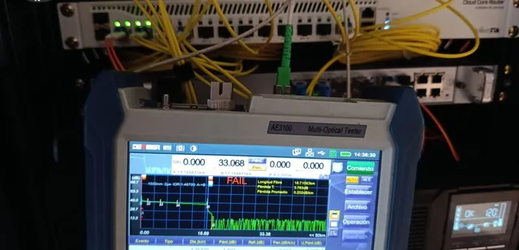
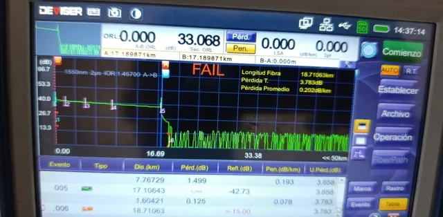
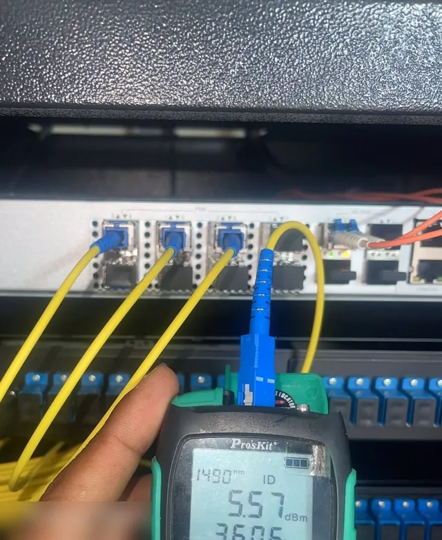

Video
Pruebas y certificación óptica
Cubre los pasos 1 a 9 del procedimiento. Ver en YouTube (se abre en otra pestaña)
Cómo se prueba y se certifica un enlace de fibra: inspección de conectores, pérdida de inserción con fuente y power meter, medición con OTDR, lectura de trazas y registro de los resultados.
Material de apoyo formativo. Este módulo no fija valores de aprobación: la pérdida máxima del enlace, de cada empalme y de cada conexión, y la reflectancia admisible, las define cada proyecto según su diseño y sus equipos. No sustituye el criterio del ingeniero responsable.
Al terminar este módulo, el técnico estará en capacidad de:
Conocimientos previos: dB, dBm y pérdida de inserción, del módulo Fundamentos de fibra óptica, y la evaluación de empalmes con OTDR en ambos sentidos, del módulo Cajas NAP.
Las pruebas de fibra se rigen por normas y recomendaciones técnicas internacionales; los valores de aceptación los fija cada proyecto.
La IEC 61300-3-35 fija el procedimiento y los criterios para evaluar la limpieza de la cara del conector y los requisitos de los microscopios. Las referencias de la FOA explican el funcionamiento del OTDR (cables de lanzamiento y recepción, zona muerta, ancho de pulso, eventos fantasma) y la medición de la pérdida de inserción con los métodos de 1, 2 y 3 cables. Los criterios del proyecto fijan la pérdida máxima, los umbrales de eventos, la reflectancia admisible, las longitudes de onda y el formato de entrega.
Serie Fibra óptica · Pruebas y certificación, producida por NPE, con narración y subtítulos. Usa trazas y mediciones reales tomadas por NPE. Cada capítulo lleva al paso correspondiente del video.
Cubre los pasos 1 a 9 del procedimiento. Ver en YouTube (se abre en otra pestaña)
Secuencia de referencia para probar y certificar un enlace, en el orden del video.
Ante un resultado fuera de límites: 1) confirmar la configuración (longitud de onda, referencia, IOR y umbrales); 2) inspeccionar y limpiar las conexiones del enlace y de los cables de prueba; 3) ubicar con el OTDR el evento que explica la diferencia; 4) corregir (rehacer el empalme, cambiar el conector o liberar la curvatura); 5) repetir las pruebas y registrar el resultado final con el anterior.
Datos y criterios que el video no desarrolla: cálculo de distancia, zonas de inspección, configuración, comprobación de la tabla de eventos, reflectancia y certificación. El tema completo está en la guía técnica (PDF).
El OTDR envía pulsos y mide, en función del tiempo, la luz que regresa. La retrodispersión del vidrio forma la línea inclinada de la traza, cuya pendiente es la atenuación; las reflexiones en conectores, empalmes mecánicos, fisuras o extremos abiertos forman los picos. La distancia sale del tiempo de ida y vuelta y del índice de refracción de grupo (IOR) configurado: d = (c × t) ÷ (2 × n). Un IOR mal configurado desplaza todas las distancias en la misma proporción.
Si el mismo tiempo se interpretara con IOR 1,468: 11,59048 × (1,467 ÷ 1,468) = 11,58258 km, unos 8 m menos.
Cerca del equipo, el pulso satura el receptor y oculta los eventos próximos: es la zona muerta. Por eso se usa un cable de lanzamiento y, en el extremo lejano, uno de recepción. Un pulso más ancho alcanza más distancia, pero separa peor los eventos cercanos.
En campo: el IOR se toma de la ficha de la fibra instalada, para la longitud de onda medida. El OTDR mide longitud de fibra, no de cable ni de trazado: para ubicar un daño en el terreno se usan las marcas métricas del cable y el registro de reservas, porque las reservas y el exceso de fibra dentro del tubo desplazan la ubicación.
| Zona | Ubicación | Tratamiento en la IEC 61300-3-35 ed. 3 (2022) |
|---|---|---|
| A | Núcleo | Criterio de aceptación más exigente: rayas y defectos según tamaño y cantidad. |
| B | Revestimiento | Con criterio de aceptación. |
| C | Adhesivo | Sin criterio de aceptación desde 2022. |
| D | Contacto (férula) | Sin criterio; las partículas sueltas se limpian para que no migren al núcleo. |
Secuencia: inspeccionar toda la cara, incluida la zona de contacto; si hay partículas, limpiar con el método del fabricante de la herramienta; volver a inspeccionar. Si quedan partículas después de limpiezas repetidas, se tratan como defectos fijos y se evalúan las zonas A y B. Según la revisión de 2022, un conector que no pasa la inspección puede usarse si cumple las pruebas de pérdida de inserción y de pérdida de retorno: la inspección no reemplaza la medición.
En campo: se inspeccionan los dos conectores de cada conexión (el del cable y el del equipo o adaptador), los cables de referencia, lanzamiento y recepción antes de cada jornada, y los puertos del instrumento con una sonda para puertos. Un cable de prueba contaminado ensucia el puerto del equipo, y un puerto dañado afecta todas las mediciones siguientes.
| Parámetro | Qué controla | Criterio |
|---|---|---|
| Longitud de onda | Atenuación y sensibilidad a curvaturas. | La del procedimiento; en monomodo, normalmente 1310 y 1550 nm. |
| Rango | Distancia máxima mostrada. | Mayor que el enlace, para que el final y el ruido posterior queden visibles. |
| Ancho de pulso | Alcance contra resolución. | El menor que permita ver el final del enlace con una traza limpia. |
| Tiempo de adquisición | Promediado de la traza; reduce el ruido. | El suficiente para que la retrodispersión se vea estable. |
| IOR | Conversión de tiempo a distancia. | El de la ficha de la fibra instalada, para la longitud de onda medida. |
| Umbrales | Qué eventos marca el equipo como fuera de criterio. | Los del proyecto. |
Traza de 11,59 km: 1550 nm, pulso de 1 µs, IOR 1,46700, rango de 25 km. Traza de 18,71 km: 1550 nm, pulso de 2 µs, IOR 1,46700, rango de 50 km. En ambas el rango supera la longitud del enlace y el final queda dentro de la pantalla.
En campo: con los umbrales de fábrica, el letrero PASS o FAIL del equipo no representa el criterio de aceptación. Antes de medir se cargan los umbrales del proyecto.
La tabla alterna filas de eventos (distancia, pérdida y reflectancia) y filas de tramos (longitud, pérdida y pendiente). La pérdida acumulada permite comprobar que es coherente.
| Fila | Distancia o longitud | Pérdida | Pendiente | Acumulada |
|---|---|---|---|---|
| Evento 003 | 4,53844 km | 0,320 dB | — | 1,331 dB |
| Tramo | 6,45770 km | 1,330 dB | 0,206 dB/km | 2,662 dB |
| Evento 004 | 10,99614 km | 0,291 dB | — | 2,953 dB |
| Tramo | 0,59434 km | 0,128 dB | 0,215 dB/km | 3,081 dB |
| Evento 005 (final) | 11,59048 km | — | — | 3,081 dB |
Tramo: 6,45770 km × 0,206 dB/km = 1,330 dB, igual a la fila. Suma desde el evento 003: 1,331 + 1,330 + 0,291 + 0,128 = 3,080 dB, frente a 3,081 dB de pérdida total (diferencia de redondeo). Pérdida promedio: 3,081 ÷ 11,59048 = 0,266 dB/km, que incluye los eventos; la atenuación propia de la fibra es la pendiente de los tramos, cerca de 0,21 dB/km.
En campo: los eventos 003 y 004 son no reflectivos (sin reflectancia), como un empalme por fusión. El equipo los marca en rojo y muestra FAIL porque superan sus umbrales configurados; la aceptación se decide con los umbrales del proyecto, y la pérdida real de un empalme se obtiene midiendo en ambos sentidos y promediando.

La reflectancia se expresa en dB negativos: cuanto más negativo, menos luz reflejada (−52 dB refleja mucho menos que −15 dB). En la traza real de 18,71 km de NPE, el evento 005 es reflectivo (−42,73 dB) y el equipo no calcula su pérdida (−,−−−): se revisa en la traza y en la configuración antes de clasificarlo, porque puede ser un conector o, si aparece a una distancia múltiplo de otro evento, un fantasma. El tramo corto que lo sigue tiene una pendiente de 0,078 dB/km, muy baja: puede estar afectado por la zona muerta.
Entre vidrio (n ≈ 1,467) y aire: R = ((1,467 − 1) ÷ (1,467 + 1))² ≈ 0,036, es decir unos −14,5 dB. Un final con reflectancia cercana a −15 dB es coherente con un extremo plano abierto; un conector APC desconectado refleja mucho menos por el ángulo de su pulido.
En campo: un pico reflectivo sin pérdida a una distancia igual al doble de la de un conector es probablemente un evento fantasma. Se confirma reduciendo la reflexión del extremo (por ejemplo con el cable de recepción) o cambiando el rango. La pendiente de un tramo afectado por zona muerta no se toma como atenuación sin verificarla.
| Medición | Equipo | Responde | Uso en la certificación |
|---|---|---|---|
| Potencia (dBm) | Power meter | ¿Cuánta luz hay en este punto? | Verificar transmisores y la potencia que llega al usuario. No es una pérdida. |
| Pérdida de inserción (dB) | Fuente y power meter con referencia | ¿Cuánto pierde el enlace completo? | Comparar con el presupuesto y con el límite del proyecto. |
| Traza OTDR | OTDR con cables de lanzamiento y recepción | ¿Dónde está cada evento y cómo es? | Ubicar y caracterizar empalmes, conectores y daños. |
En dos puertos GPON de una OLT el medidor registró 5,48 y 5,57 dBm a 1490 nm (unos 3,5 mW): son potencias de salida del transmisor. Si en la ONT del usuario se midieran −20,0 dBm, la pérdida del camino sería 5,48 − (−20,0) = 25,48 dB, que se compara con el presupuesto y con la clase de los módulos ópticos.
La lectura en la ONT es un valor supuesto para practicar.
En campo: la FOA advierte que el OTDR no debe usarse para medir la pérdida de inserción; la pérdida total se certifica con fuente y power meter. Un tramo con servicio no está certificado: lo está cuando sus mediciones están documentadas y comparadas con los criterios del proyecto.
Riesgos para la persona y errores que invalidan una medición.
| Riesgo o error | Severidad | Consecuencia y control |
|---|---|---|
| Luz infrarroja invisible | Alta | Nunca mirar un conector ni un puerto; verificar con el medidor que no haya señal antes de inspeccionar o desconectar. |
| Residuos de fibra | Alta | Recipiente marcado para los residuos; gafas de seguridad. |
| Desconectar una fibra con servicio | Alta | Identificar la fibra según el registro del proyecto y verificar la señal antes de manipular la conexión. |
| Conectar sin inspeccionar | Media | Mediciones alteradas y puertos del equipo dañados. Inspeccionar, limpiar e inspeccionar otra vez antes de cada conexión. |
| Usar los umbrales de fábrica del OTDR | Media | El PASS o FAIL no corresponde al criterio del proyecto. Cargar los umbrales del proyecto antes de medir. |
| IOR distinto al de la ficha | Media | Distancias desplazadas y daños buscados en el lugar equivocado. Configurar el IOR de la fibra instalada. |
| Certificar solo con el OTDR | Media | La pérdida total queda sin medir. Medir la pérdida de inserción con fuente y power meter. |
Lo que muestran el OTDR y el power meter, su causa probable y qué hacer.
| Señal | Gravedad | Qué hacer |
|---|---|---|
| Caída abrupta antes de la longitud esperadaCorte de la fibra. | Crítica | Ubicar el punto con la distancia del OTDR, las marcas métricas del cable y el registro de reservas, y reportar. |
| Pérdida de inserción fuera del límite del proyectoConexión sucia, empalme defectuoso, curvatura o daño. | Alta | Confirmar la configuración, inspeccionar y limpiar, ubicar el evento con el OTDR, corregir y volver a medir. Registrar el resultado final junto con el anterior. |
| Letrero FAIL en la trazaEventos que superan los umbrales configurados en el equipo. | Media | Comparar cada evento con los umbrales del proyecto; medir los empalmes en ambos sentidos antes de decidir si se rehacen. |
| El daño no aparece donde indica el OTDRLongitud de fibra distinta a la de cable, reservas o IOR distinto al real. | Media | Trasladar la distancia al terreno con las marcas métricas y el registro de reservas. |
| Evento reflectivo sin pérdida medibleConector o evento fantasma. | Media | Revisar la traza y la configuración antes de clasificarlo. |
| Pico sin pérdida al doble de la distancia de un conectorEvento fantasma por reflexión repetida. | Baja | Reducir la reflexión del extremo con el cable de recepción o cambiar el rango. |
| Pendiente muy baja en un tramo corto después de un picoZona muerta del evento reflectivo. | Baja | No tomarla como atenuación de la fibra sin verificarla. |
| Final con reflectancia cercana a −15 dBExtremo plano abierto (reflexión vidrio-aire). | Baja | Es coherente con el final de la fibra; si se esperaba un conector APC, revisar el extremo. |
Equipos y mediciones de NPE. Haga clic en una foto para verla en tamaño completo.





Una pregunta por cada clave técnica; cuatro son casos de campo. Respóndala y luego ábrala para comprobar.
Porque el OTDR mide longitud de fibra, no de cable ni de trazado: las reservas, el exceso de fibra dentro del tubo y un IOR distinto al real desplazan la ubicación. Se usan las marcas métricas del cable y el registro de reservas para trasladar la distancia al terreno.
Faltó volver a inspeccionar: limpiar sin mirar no es un procedimiento. Las zonas con criterio de aceptación son la A (núcleo) y la B (revestimiento).
No necesariamente. La tabla muestra dos eventos no reflectivos de 0,320 y 0,291 dB y una fibra cercana a 0,21 dB/km. El FAIL indica que esos eventos superan los umbrales del equipo; se comparan con el umbral del proyecto y se miden en ambos sentidos antes de decidir.
No. Ese promedio incluye los eventos del enlace. La atenuación propia de la fibra es la pendiente de los tramos, cerca de 0,21 dB/km.
Un evento fantasma: la reflexión del conector final va y vuelve en la fibra. Se confirma reduciendo la reflexión del extremo, por ejemplo con el cable de recepción, o cambiando el rango.
No. El servicio confirma continuidad y potencia suficiente hoy, no el cumplimiento de los criterios ni el margen futuro. Se certifica cuando sus mediciones están documentadas y comparadas con los criterios del proyecto.